We use the power of immersive storytelling to create positive social change. We shed light on the lives of everyday people struggling to survive today’s gravest humanitarian crises. Because we believe that immersive storytelling leads to empathy — and empathy leads to action.
We are Lightshed.
Lightshed is a platform for collaboration.
We collaborate with individuals, organizations, and corporations to tell stories like they’ve never been told before. Together, we're committed to using emerging technologies like Virtual Reality to inspire meaningful action: through our films, portals, exhibits, and more.
Join us.
WAVES OF GRACE
2015
After surviving a bout with the deadly disease that stole the lives of her family, Decontee, a Liberian native, uses her immunity to help children orphaned by Ebola. This VR experience follows her story from illness to recovery, mourning to perseverance.
UN bag American Apparel, Schlitz squid cray church-key heirloom mustache tilde meggings shabby chic single-speed.
Download Vrse, an iOS / Android
app for your smartphone.
For the best experience try it with a VR headset like Google Cardboard or Samsung Gear VR.
CLOUDS OVER SIDRA
2014
“Clouds Over Sidra” follows a young girl in the Za’atari camp in Jordan–home to 84,000 Syrian refugees. This is the film that took U.N. leaders on a tour of her makeshift tent, her school, and even the camp’s football pitch.
UN bag American Apparel, Schlitz squid cray church-key heirloom mustache tilde meggings shabby chic single-speed.
“The day virtual reality made me cry,”- CNET
Experience the Film
EXPERIENCE THE FILM
Download Vrse, an iOS / Android
app for your smartphone.
For the best experience try it with a VR headset like Google Cardboard or Samsung Gear VR.
IN PRODUCTION
ONGOING
Lightsed's latest immersive storytelling projects focus on a range of issues from around the world. As with all of our collaborations, we hope our films and stories will bring greater empathy for these pressing problems and spark meaningful action.
"The River Goddess" See firsthand the magnitude of change required to save the Ganges, the most polluted river in the world.
"The River Goddess" See firsthand the magnitude of change required to save the Ganges, the most polluted river in the world.
Hukuo: The Great Chinese Migration from rural areas to large cities has left a lost generation of children in its wake.
Nepal: Follow the heroic efforts of the Nepali people as they rebuild after the devastating earthquake of April 2015 that killed 9,000.
LIGHTSHED EXPERIENCES
ENGAGE WITH OUR ISSUES
Upcoming Viewings:
MOMI, Lightshed Portal NYC, NY
(now thru - Feb 2016)
The Standard Hotel,
Lightshed Viewing
Los Angeles, CA
(March 2016)
"We're barely at the beginning of this medium... It is fascinating to think about and talk about what forms of storytelling will evolve." - Spike Jonze
"The River Goddess" See firsthand the magnitude of change required to save the Ganges, the most polluted river in the world.
"The River Goddess" See firsthand the magnitude of change required to save the Ganges, the most polluted river in the world.
Hukuo: The Great Chinese Migration from rural areas to large cities has left a lost generation of children in its wake.
Nepal: Follow the heroic efforts of the Nepali people as they rebuild after the devastating earthquake of April 2015 that killed 9,000.
We are making a difference.
Our films have helped raise over $4 billion in direct support and funding.
Our Films have been seen in over 40 countries and translated into 15 languages.
1 in 6 people donated upon viewing "Clouds of Sidra". This is twice the normal rate.

The UN Secratary General set a challenged goal of $2.3 billion in projected support related to "Clouds over Sidra". We topped $3.8 billion.